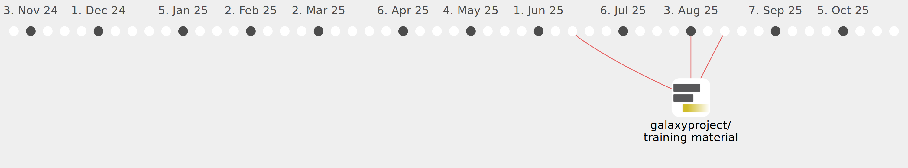

tflowers15

Commits all-time: 279
Commits last year: 279

(279)
- ae4cc0a
- a10345a
- 5768ce4
- c046a6a
- ead0f23
- ce6a51b
- 2d28150
- a10bb41
- 95841a9
- 1777cf0
- de553ab
- d911a9a
- 332e93c
- d050739
- 763c5f5
- 034ef7f
- ec287b3
- a262978
- a290943
- f96211b
- bdcb069
- 2daf83f
- 8d9d64d
- 494958b
- 037e81f
- c13d301
- b1da056
- a118d29
- 29a047a
- bca10d3
- 8ec0d0d
- 61470d7
- 73d5870
- ab9530f
- dec7706
- 9db3db3
- 597f469
- 3eaa12a
- d9f40db
- 78d7fe7
- 5ab92c3
- 46f36ce
- eefd73f
- 9691ca6
- a49fecd
- 11c3076
- 1b5094c
- 8a9d12f
- 7e95753
- d6d8154
- 4ddc3cb
- 5409f84
- 0b71af1
- 111b0b8
- bc38055
- f6da0ef
- 851be49
- 7d584c3
- b188505
- 311f7ba
- 1f2b4e4
- d6a9d66
- d7d591c
- 64ef751
- 814e509
- 71861f7
- cf6bf17
- d59a0f2
- 80e5e13
- badb733
- daebf09
- 39019ab
- 607fcd0
- 179c770
- 3834183
- c127f70
- 4ec165f
- 14ff23f
- 2b3d189
- c189339
- 07b9ff0
- 9fe4993
- 4657acb
- 82124fd
- e5fa428
- 6ee2659
- 6ccb3b7
- ce41379
- dd3e244
- b4a1b2d
- 30aeacd
- 207a5f5
- 74e151a
- 2ef6e62
- 9c7c246
- c10209c
- 57fba4c
- 4d2e04c
- 868cddb
- 13f120f
- 1a51cd3
- c43b3ff
- a6f0842
- 5168415
- f495754
- 441c7fe
- 004fd0e
- a1e105b
- 1d8eb14
- bb60a9c
- b099980
- 3bfe549
- ade5ba5
- 1c79264
- 4c2d8fe
- 8845c20
- 5329e61
- 29545ee
- b10877b
- a8cf52f
- e45d493
- 2b1fdd1
- 2ce2028
- 4ace4a2
- cccd917
- df8315e
- 3a19a64
- 046bc52
- 0e6d874
- 6fc3948
- 05dcc09
- 92607f3
- 02ce99b
- 93a47c2
- 2cd31d7
- fca54d5
- 7c65c7e
- 495e77f
- 314c17b
- 2f7fe37
- 517b9ff
- f24239f
- f32ffd1
- 2b95aa0
- cd2e038
- 0a2821c
- b1dd924
- 62be68e
- e9af0c8
- 30da890
- bebb705
- 2350271
- 0d5748b
- cda2d86
- b9ae7cb
- fccb0e4
- f223f09
- f242616
- eb177b7
- 9601cb2
- 8f5019e
- 6eb6fea
- 5675721
- fa4e74c
- 36db5e9
- 382d0a9
- 9bdc5a6
- fa89098
- c5af2a7
- 7bbe094
- 0c8a867
- 3c7c758
- 591499a
- 8c5ea6b
- 26d2a09
- f4c4b7b
- 1b44fe7
- ceeb46d
- 548bdd4
- ea4cae0
- bec47c3
- b653b66
- f52ead1
- 8206e56
- b3578ba
- ecc2e2e
- d662cc9
- 9bfe386
- 52baa42
- 501a57f
- 863a39d
- eeabd95
- 6fb3398
- 9dc1fcb
- 52a10f8
- 42ea32a
- a3d3ab1
- a307f6c
- b2b363e
- 61640de
- 67baf4d
- f983d13
- c6da7bc
- 27e92c7
- 3bc54c3
- a6927e7
- 521145a
- 87a98d9
- fa5b530
- 1ccb688
- 89bdcda
- 1c75699
- 78529fc
- ae619cf
- ec97f46
- b6d57ee
- cf489e9
- 2b9831b
- aa54903
- e1811a9
- e6ce4b4
- c1c4a81
- f9c9ab8
- f20b6de
- 1086e01
- 64c0a9d
- 4189b74
- f00330b
- c2bf6f1
- 9f45b32
- a0dc33f
- 9d644e1
- 7d2a776
- 8298759
- f67fc05
- 96f20f8
- de24119
- fe632e5
- d64b672
- 950a207
- f4bb70c
- 39c37cb
- 6fbb182
- 15d376f
- 336ba12
- c1bc21c
- f5cd92f
- cf66502
- a6dce33
- 6bae9ba
- f6bd0aa
- b8e552f
- c218763
- 3477cd9
- 61e6cac
- c125a3d
- 4bbeb4b
- be719c1
- 86b0e19
- ae0020e
- b73b553
- f0242a1
- 661e589
- 09941d9
- e2d461c
- 1587802
- 7855767
- e466626
- 9f6a5a6
- 7103757
- ac4d43d
- cd99ed4
- 1e27e31
- 006ffec
- e4d5987
- e435019
- f90fe08
- 7d0c35d
- 0267a77